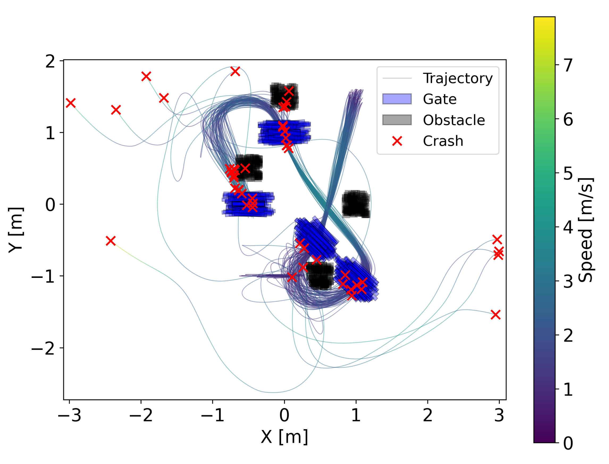
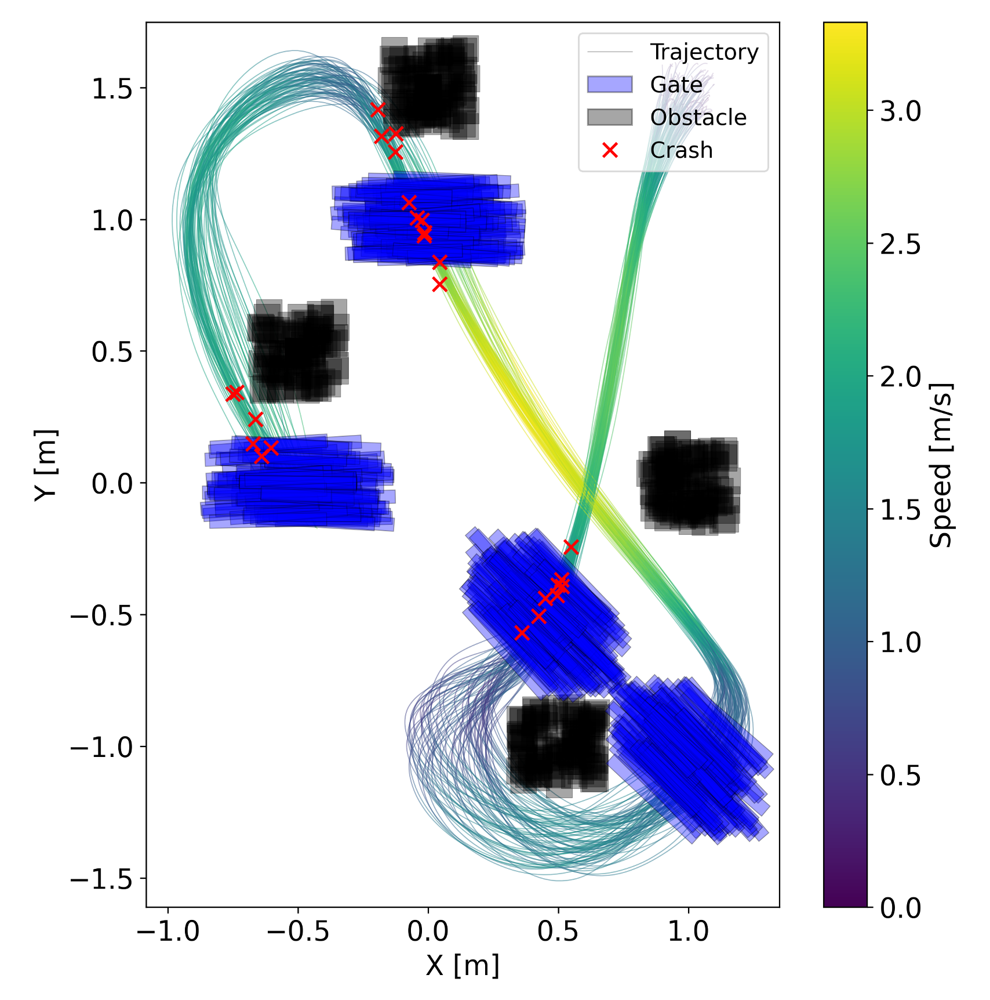

From MPCC to MPCCC · Niclas Schenk & Maximilian Christof · Technical University of Munich
This project develops and compares two Model Predictive Contouring Control strategies for agile autonomous drone racing in dynamic, randomized environments. The baseline MPCC uses a progress reward for aggressive flight, while the novel MPCCC replaces it with curvature-based speed adaptation for improved robustness.
Read the full report (PDF)| Controller | Mean Time | Variance | Pass Rate |
|---|---|---|---|
| MPCC | 4.98 s | 0.0302 | 51% |
| MPCCC | 5.93 s | 0.0015 | 75% |

